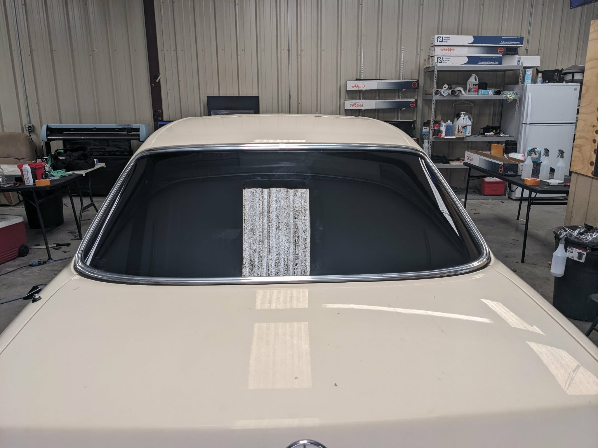
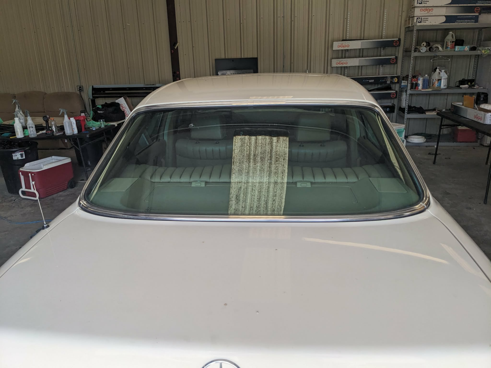
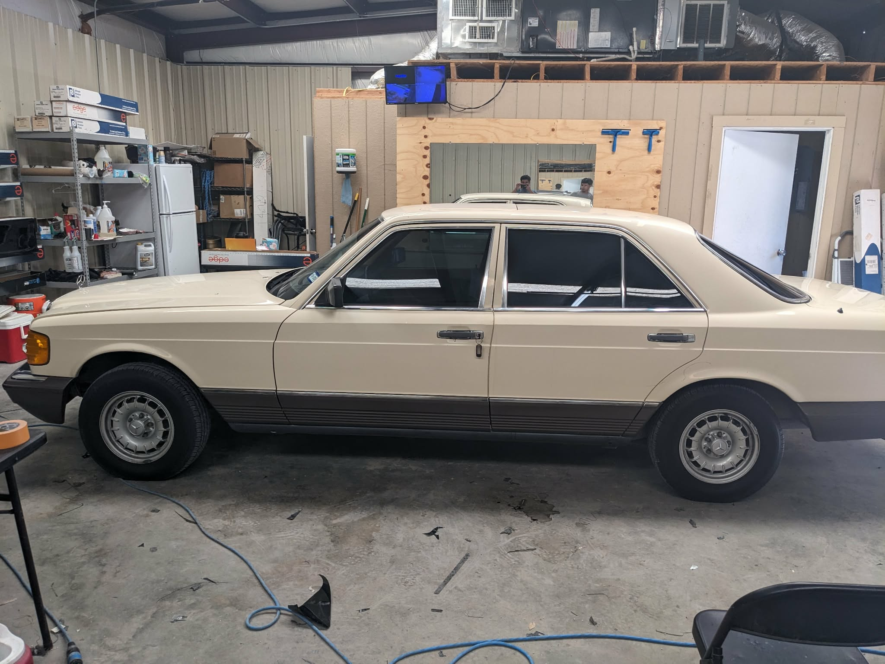
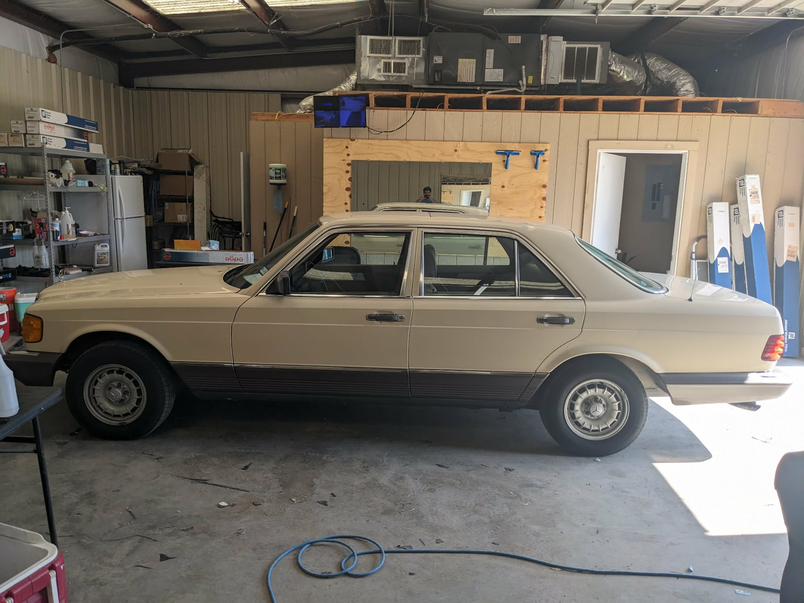
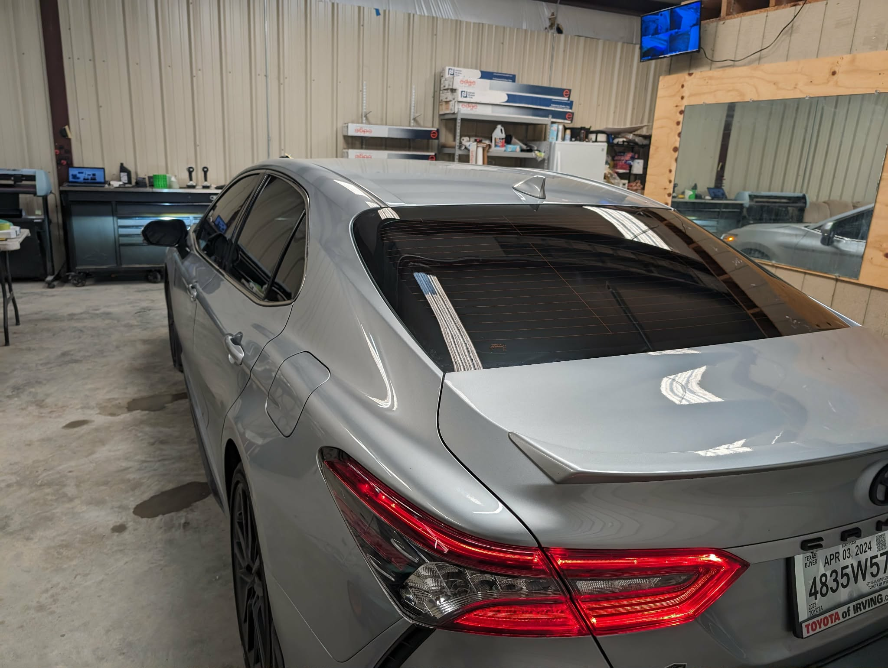
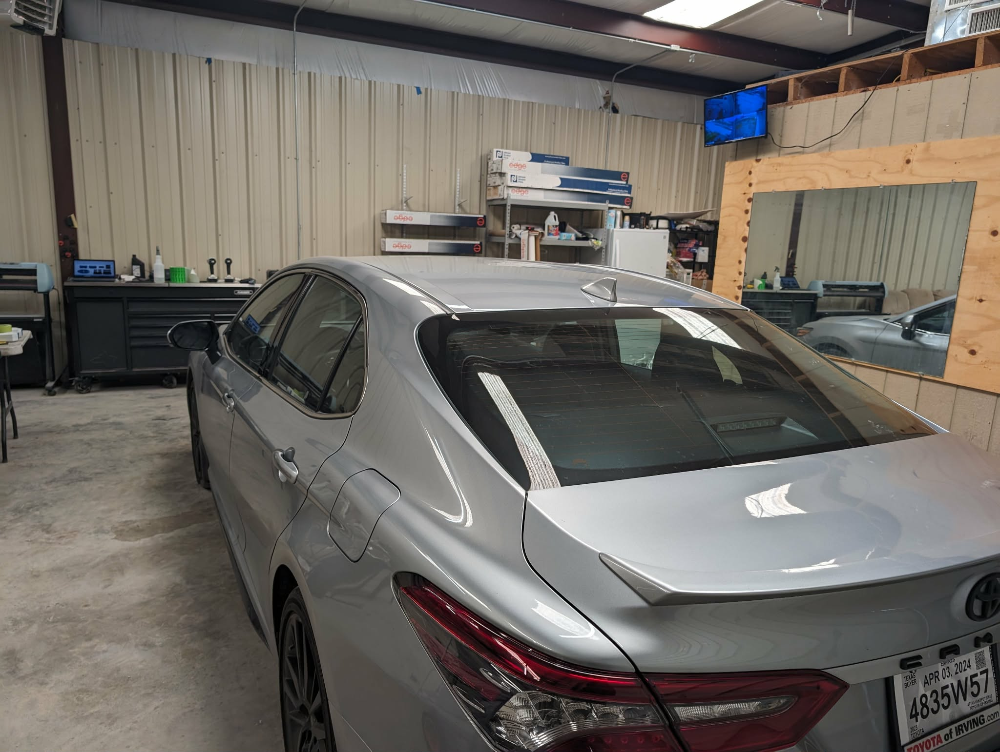
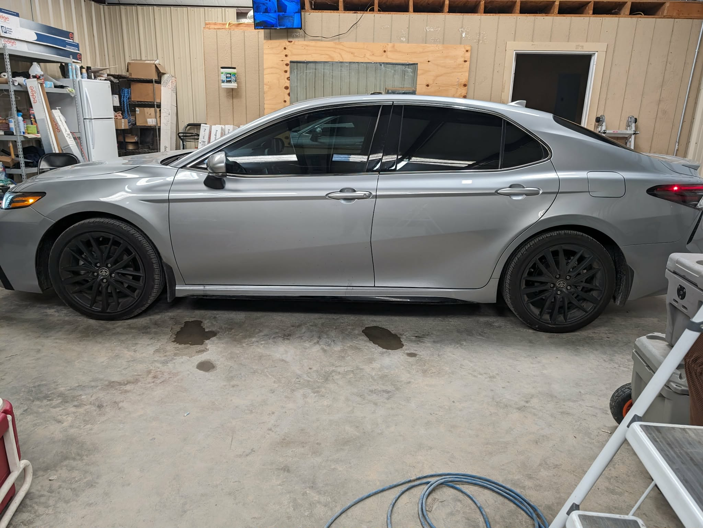
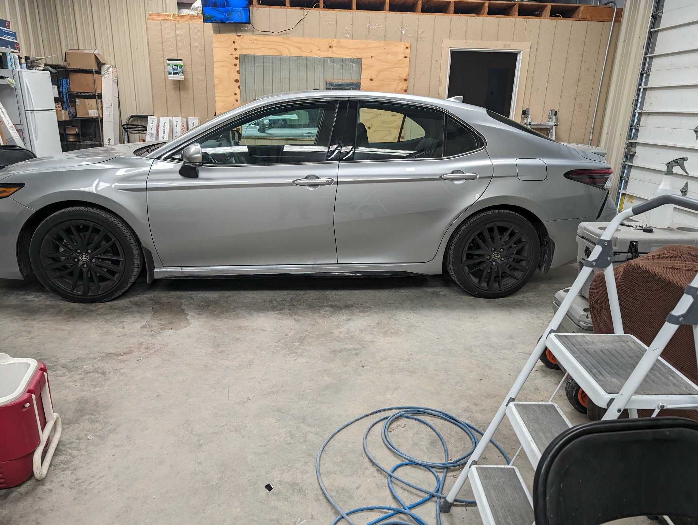

Corsicana's Trusted Window Tint Experts
13+ years tinting cars, homes, and businesses across Corsicana, TX — backed by lifetime warranty film and a 5-star reputation.
Call Now See PricingSee the Difference
Real cars, real tint. Drag any slider to see each vehicle before and after — heat, glare, and privacy, gone in one visit.








Our Services
Automotive
Sedans, trucks, SUVs, and crossovers — standard and ceramic film for every vehicle type.
Learn More →Residential
Cut glare and heat at home with lifetime-warranty window film built for Texas summers.
Learn More →Commercial
Protect storefronts and offices while keeping your space cool, private, and professional.
Learn More →Pricing That Fits Your Budget
Tinting starts at just $40 for a single door window with our standard lifetime warranty film. Ceramic upgrades available.
View Full PricingReady to Get Started?
Call now for a free quote — Alexis Window Tint is standing by.
Call (903) 503-0115